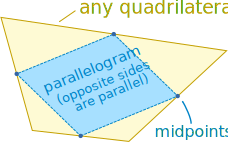

Parallelogram In Any Quadrilateral
Inside any quadrilateral (a 4-sided flat shape) there is a parallelogram (opposite sides parallel and equal in length):

When we connect the midpoints (the point exactly half-way along a line) of each side of the quadrilateral, one after the other, we create a new shape that has opposite sides parallel, even though the containing quadrilateral might not.
Play with it here:
images/geom-quad.js?mode=inscr
To see why, click on the "Diags" button and drag the points around, while thinking "midpoints".
Also try different shape types, such as square and kite, and see what happens.